長期トレンド
JKMとJEPXシステムプライスの推移グラフ
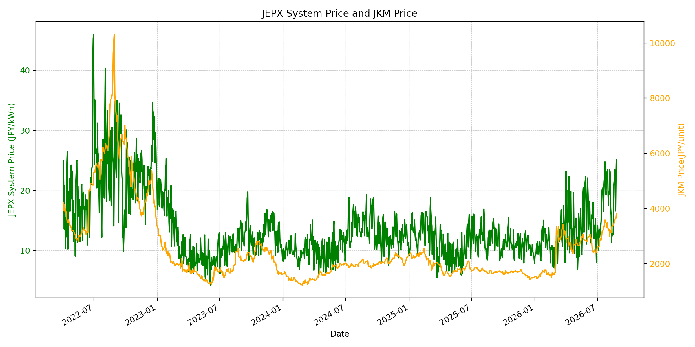
WTIの推移グラフ
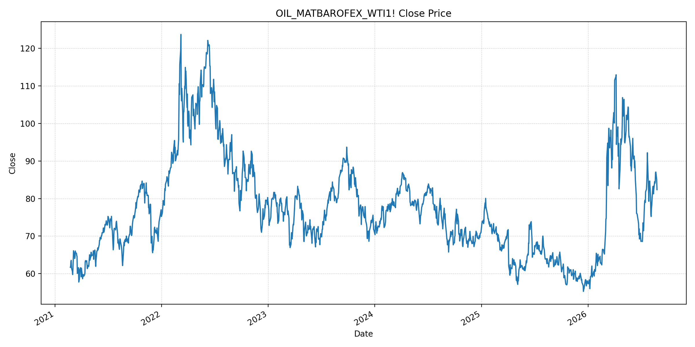
JEPXエリアプライスグラフ（直近一年分）
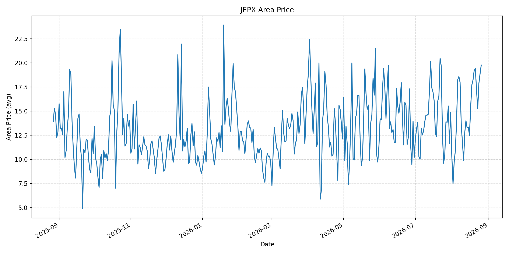
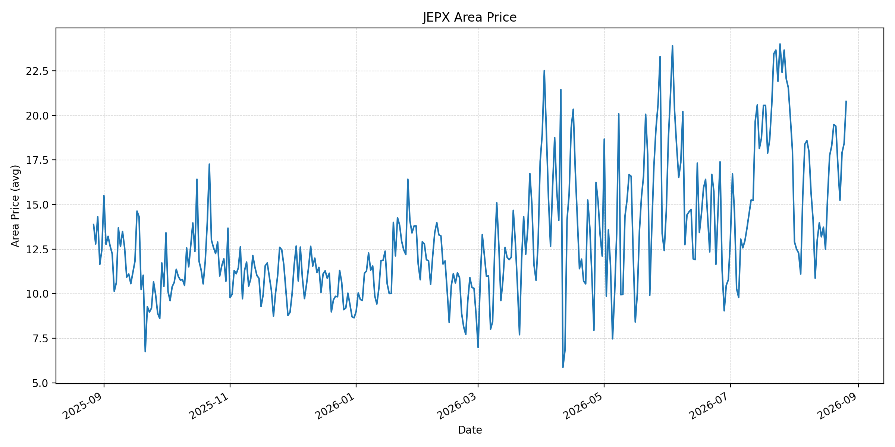
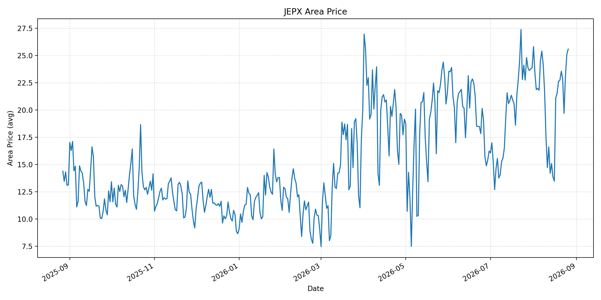
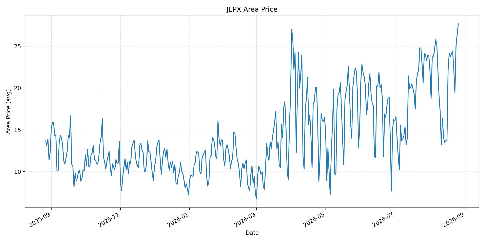
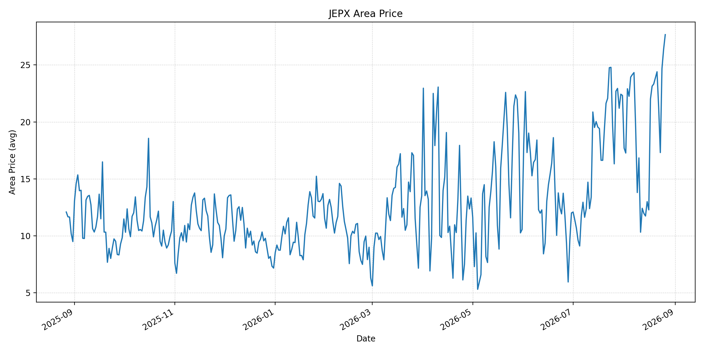
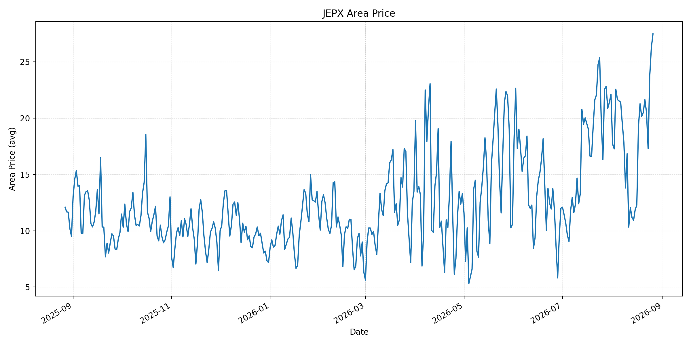
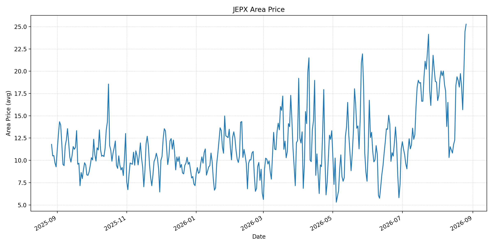
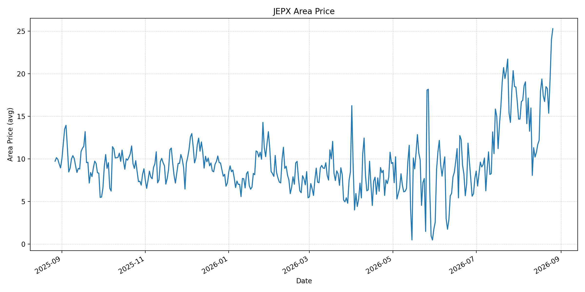
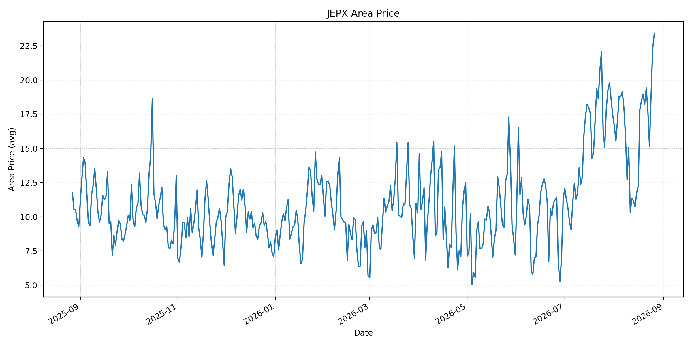
短期トレンド
JKMとJEPXシステムプライスの推移グラフ
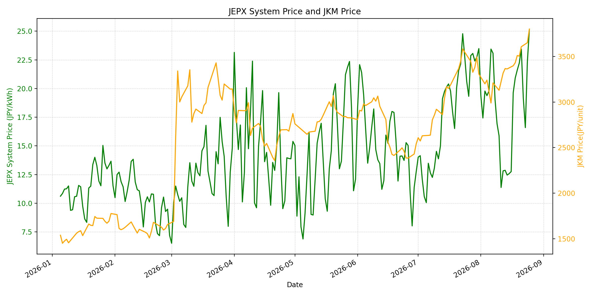
WTIの推移グラフ
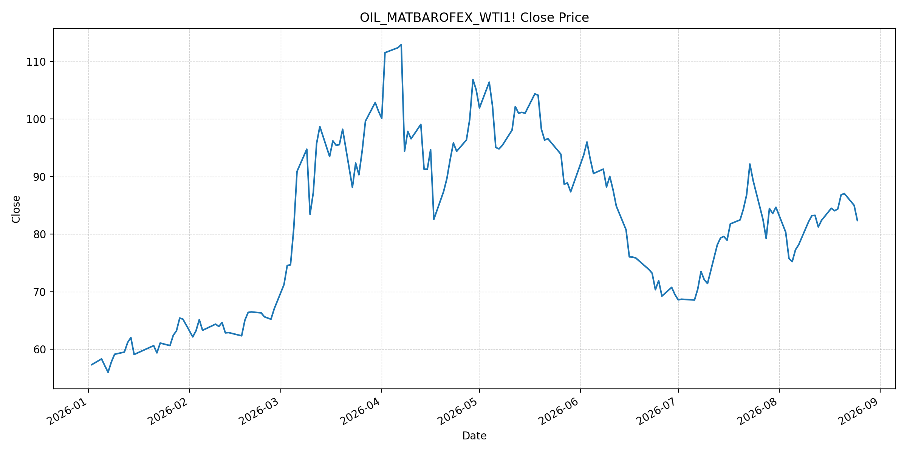
JEPXシステムプライス
最新値は 2026-08-26 分、先週終値は 2026-08-19、先月終値は 2026-07-31 時点の直近値です。
| エリア | 当日価格 | 前日価格 | 前日比（％） | 先週終値 | 先週比（％） | 先月終値 | 先月比（％） | 過去最高値 | 最高値比（％） |
|---|---|---|---|---|---|---|---|---|---|
| システム | 25.73 | 25.18 | 2.18 | 21.61 | 19.07 | 23.48 | 9.58 | 64.06 | -59.84 |
| 北海道 | 19.77 | 18.86 | 4.83 | 18.21 | 8.57 | 14.86 | 33.04 | 73.92 | -73.25 |
| 東北 | 20.78 | 18.42 | 12.81 | 18.29 | 13.61 | 18.04 | 15.19 | 84.92 | -75.53 |
| 東京 | 25.59 | 25.12 | 1.87 | 22.62 | 13.13 | 23.85 | 7.30 | 86.13 | -70.29 |
| 中部 | 27.66 | 26.37 | 4.89 | 23.76 | 16.41 | 23.83 | 16.07 | 52.06 | -46.87 |
| 北陸 | 27.66 | 26.37 | 4.89 | 23.33 | 18.56 | 22.32 | 23.92 | 46.48 | -40.50 |
| 関西 | 27.48 | 26.27 | 4.61 | 20.15 | 36.38 | 22.13 | 24.18 | 46.48 | -40.88 |
| 中国 | 25.27 | 24.44 | 3.40 | 18.97 | 33.21 | 18.78 | 34.56 | 46.48 | -45.64 |
| 四国 | 25.27 | 23.98 | 5.38 | 17.42 | 45.06 | 16.74 | 50.96 | 46.48 | -45.64 |
| 九州 | 23.37 | 22.28 | 4.89 | 18.97 | 23.19 | 17.46 | 33.85 | 40.54 | -42.36 |
LNG先物価格
最新値は 2026-08-25 の LNG(close) です。
| 当日価格 | 前日価格 | 前日比（％） | 先週終値 | 先週比（％） | 先月終値 | 先月比（％） | 過去最高値 | 最高値比（％） |
|---|---|---|---|---|---|---|---|---|
| 3800.00 | 3651.00 | 4.08 | 3431.00 | 10.75 | 3307.00 | 14.91 | 10319.00 | -63.17 |
石油先物価格
最新値は 2026-08-25 の OIL(close) です。
| 当日価格 | 前日価格 | 前日比（％） | 先週終値 | 先週比（％） | 先月終値 | 先月比（％） | 過去最高値 | 最高値比（％） |
|---|---|---|---|---|---|---|---|---|
| 82.36 | 85.01 | -3.12 | 84.06 | -2.02 | 84.67 | -2.73 | 123.70 | -33.42 |
ニュース
イラン情勢に関するニュース
- オマーンとイランの外相は、ホルムズ海峡の船舶通航管理の枠組みを協議しました。参照: AP, 2026-08-25
- 米国の追加制裁に対し、イランは反発する一方、仲介再開の兆しも報じられています。参照: Reuters, 2026-08-25
ホルムズ海峡経由の石油・LNGに関するニュース
- オマーン沖で石油タンカーが攻撃を受け航行不能となり、海峡を利用する船社の安全リスクが続いています。参照: AP, 2026-08-25
- 米国は海峡の機雷除去を表明しましたが、船舶攻撃は継続しています。暫定データの原油通航は日量500万バレルで、戦前の2,000万バレル超を大きく下回ります。参照: Reuters, 2026-08-25
ホルムズ海峡経由でない石油・LNGに関するニュース
- 過去24時間で、ホルムズ以外のLNG供給量を直接変更する主要な新規公表は確認できませんでした。
- 日本は、ホルムズ回避航路の輸送費支援と原油備蓄90日分への回復を進めています。参照: S&P Global, 2026-08-24
日本国内のイラン戦争に関係するニュース
- 過去24時間で、JEPX制度または国内電力需給ルールを直接変更する主要な新規公表は確認できませんでした。
- 政府は、ホルムズ回避ルートの活用と備蓄回復を通じて供給リスクへの対応を進めています。参照: S&P Global, 2026-08-24
インサイト
ニュース事項による日本の電力市場への影響（短期：数日〜1週間）
- JEPXシステムプライスは 25.73 円/kWhで前日比 2.18%、先週比 19.07% と上昇しました。中部・北陸は 27.66 円/kWh、関西は 27.48 円/kWhです。
- LNGは 3800.00 で先週比 10.75%、WTIは 82.36 ドルで -2.02% です。海峡の通航管理協議は下振れ材料ですが、船舶攻撃はLNGリスクプレミアムを支えます。
- 短期では、実通航量と安全事案、通航管理枠組みの実施状況が燃料費とJEPXの方向を左右します。
ニュース事項による日本の電力市場への影響（長期：1ヶ月〜半年）
- JEPXシステムは先月比 9.58%、LNGは 14.91%、WTIは -2.73% です。LNG上昇が続けば火力限界費用へ波及する可能性があります。
- 四国は先月比 50.96%、中国 34.56%、九州 33.85% と上昇しています。燃料市況に加えエリア別需給を確認する必要があります。
- 過去最高値比ではシステム -59.84%、LNG -63.17%、WTI -33.42% です。中長期では、回避航路・備蓄の実効性と海峡の安全な通航回復を分けて監視することが重要です。